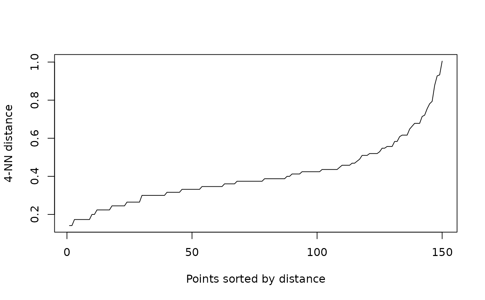
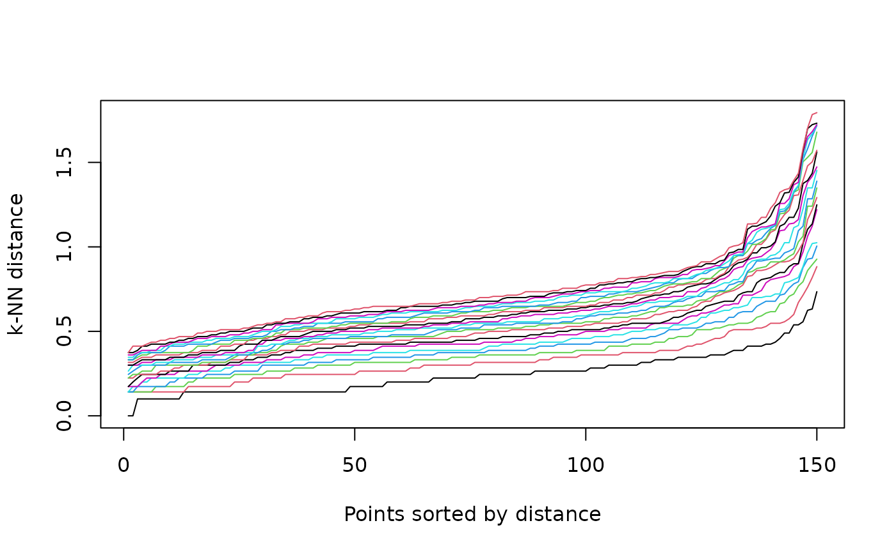

Fast calculation of the k-nearest neighbor distances for a dataset
represented as a matrix of points. The kNN distance is defined as the
distance from a point to its k nearest neighbor. The kNN distance plot
displays the kNN distance of all points sorted from smallest to largest. The
plot can be used to help find suitable parameter values for dbscan().
Arguments
- x
the data set as a matrix of points (Euclidean distance is used) or a precalculated dist object.
- k
number of nearest neighbors used for the distance calculation. For
kNNdistplot()also a range of values forkorminPtscan be specified.- all
should a matrix with the distances to all k nearest neighbors be returned?
- ...
further arguments (e.g., kd-tree related parameters) are passed on to
kNN().- minPts
to use a k-NN plot to determine a suitable
epsvalue fordbscan(),minPtsused in dbscan can be specified and will setk = minPts - 1.
Value
kNNdist() returns a numeric vector with the distance to its k
nearest neighbor. If all = TRUE then a matrix with k columns
containing the distances to all 1st, 2nd, ..., kth nearest neighbors is
returned instead.
Examples
data(iris)
iris <- as.matrix(iris[, 1:4])
## Find the 4-NN distance for each observation (see ?kNN
## for different search strategies)
kNNdist(iris, k = 4)
#> [1] 0.1414214 0.1732051 0.2645751 0.2449490 0.1732051 0.3741657 0.3162278
#> [8] 0.2000000 0.3464102 0.1732051 0.3316625 0.3000000 0.2000000 0.4795832
#> [15] 0.5567764 0.6164414 0.3872983 0.1732051 0.5099020 0.2645751 0.3605551
#> [22] 0.2645751 0.5196152 0.3872983 0.4242641 0.2236068 0.2449490 0.1732051
#> [29] 0.1732051 0.2236068 0.2236068 0.3162278 0.4242641 0.4123106 0.1732051
#> [36] 0.3316625 0.3464102 0.2645751 0.3000000 0.1414214 0.2449490 0.7810250
#> [43] 0.3000000 0.3741657 0.4123106 0.2449490 0.3000000 0.2236068 0.2449490
#> [50] 0.2236068 0.4582576 0.3741657 0.3464102 0.4358899 0.3741657 0.3316625
#> [57] 0.4582576 0.7211103 0.3162278 0.5291503 0.7141428 0.3605551 0.5830952
#> [64] 0.4242641 0.5196152 0.3464102 0.4123106 0.3605551 0.6782330 0.2645751
#> [71] 0.4242641 0.4000000 0.4242641 0.4358899 0.3872983 0.3162278 0.3741657
#> [78] 0.4242641 0.3464102 0.4472136 0.3000000 0.4358899 0.3000000 0.3741657
#> [85] 0.4898979 0.4690416 0.3316625 0.6082763 0.3162278 0.3000000 0.4242641
#> [92] 0.3464102 0.2645751 0.6480741 0.3000000 0.3316625 0.2236068 0.3464102
#> [99] 0.7937254 0.2449490 0.5567764 0.3316625 0.4582576 0.3872983 0.3872983
#> [106] 0.5477226 0.8774964 0.5477226 0.6164414 0.7549834 0.4242641 0.3872983
#> [113] 0.3741657 0.5196152 0.5196152 0.3872983 0.3872983 1.0049876 0.9273618
#> [120] 0.5830952 0.3000000 0.4582576 0.6782330 0.3605551 0.3741657 0.4690416
#> [127] 0.3872983 0.3000000 0.3741657 0.5567764 0.5099020 0.9327379 0.4358899
#> [134] 0.4358899 0.6633250 0.6782330 0.4358899 0.4358899 0.3162278 0.3741657
#> [141] 0.3464102 0.5099020 0.3316625 0.3464102 0.4000000 0.3741657 0.4123106
#> [148] 0.3605551 0.6164414 0.3316625
## Get a matrix with distances to the 1st, 2nd, ..., 4th NN.
kNNdist(iris, k = 4, all = TRUE)
#> 1 2 3 4
#> [1,] 0.1000000 0.1414214 0.1414214 0.1414214
#> [2,] 0.1414214 0.1414214 0.1414214 0.1732051
#> [3,] 0.1414214 0.2449490 0.2645751 0.2645751
#> [4,] 0.1414214 0.1732051 0.2236068 0.2449490
#> [5,] 0.1414214 0.1414214 0.1732051 0.1732051
#> [6,] 0.3316625 0.3464102 0.3605551 0.3741657
#> [7,] 0.2236068 0.2645751 0.3000000 0.3162278
#> [8,] 0.1000000 0.1414214 0.1732051 0.2000000
#> [9,] 0.1414214 0.3000000 0.3162278 0.3464102
#> [10,] 0.1000000 0.1732051 0.1732051 0.1732051
#> [11,] 0.1000000 0.2828427 0.3000000 0.3316625
#> [12,] 0.2236068 0.2236068 0.2828427 0.3000000
#> [13,] 0.1414214 0.1732051 0.2000000 0.2000000
#> [14,] 0.2449490 0.3162278 0.3464102 0.4795832
#> [15,] 0.4123106 0.4690416 0.5477226 0.5567764
#> [16,] 0.3605551 0.5477226 0.6164414 0.6164414
#> [17,] 0.3464102 0.3605551 0.3872983 0.3872983
#> [18,] 0.1000000 0.1414214 0.1732051 0.1732051
#> [19,] 0.3316625 0.3872983 0.4690416 0.5099020
#> [20,] 0.1414214 0.1414214 0.2449490 0.2645751
#> [21,] 0.2828427 0.3000000 0.3605551 0.3605551
#> [22,] 0.1414214 0.2449490 0.2449490 0.2645751
#> [23,] 0.4582576 0.5099020 0.5099020 0.5196152
#> [24,] 0.2000000 0.2645751 0.3741657 0.3872983
#> [25,] 0.3000000 0.3741657 0.4123106 0.4242641
#> [26,] 0.1732051 0.2000000 0.2236068 0.2236068
#> [27,] 0.2000000 0.2236068 0.2236068 0.2449490
#> [28,] 0.1414214 0.1414214 0.1414214 0.1732051
#> [29,] 0.1414214 0.1414214 0.1414214 0.1732051
#> [30,] 0.1414214 0.1732051 0.2236068 0.2236068
#> [31,] 0.1414214 0.1414214 0.1732051 0.2236068
#> [32,] 0.2828427 0.3000000 0.3000000 0.3162278
#> [33,] 0.3464102 0.3464102 0.3741657 0.4242641
#> [34,] 0.3464102 0.3605551 0.3872983 0.4123106
#> [35,] 0.1000000 0.1414214 0.1414214 0.1732051
#> [36,] 0.2236068 0.3000000 0.3162278 0.3316625
#> [37,] 0.3000000 0.3162278 0.3316625 0.3464102
#> [38,] 0.1414214 0.2449490 0.2645751 0.2645751
#> [39,] 0.1414214 0.2000000 0.2449490 0.3000000
#> [40,] 0.1000000 0.1414214 0.1414214 0.1414214
#> [41,] 0.1414214 0.1732051 0.1732051 0.2449490
#> [42,] 0.6244998 0.7141428 0.7681146 0.7810250
#> [43,] 0.2000000 0.2236068 0.3000000 0.3000000
#> [44,] 0.2236068 0.2645751 0.3162278 0.3741657
#> [45,] 0.3605551 0.3741657 0.4123106 0.4123106
#> [46,] 0.1414214 0.2000000 0.2000000 0.2449490
#> [47,] 0.1414214 0.2449490 0.2449490 0.3000000
#> [48,] 0.1414214 0.1414214 0.2236068 0.2236068
#> [49,] 0.1000000 0.2236068 0.2449490 0.2449490
#> [50,] 0.1414214 0.1732051 0.2236068 0.2236068
#> [51,] 0.2645751 0.3316625 0.4358899 0.4582576
#> [52,] 0.2645751 0.3162278 0.3464102 0.3741657
#> [53,] 0.2645751 0.2828427 0.3162278 0.3464102
#> [54,] 0.2000000 0.3000000 0.3162278 0.4358899
#> [55,] 0.2449490 0.3162278 0.3741657 0.3741657
#> [56,] 0.3000000 0.3162278 0.3162278 0.3316625
#> [57,] 0.2645751 0.3741657 0.4242641 0.4582576
#> [58,] 0.1414214 0.3872983 0.4582576 0.7211103
#> [59,] 0.2449490 0.2449490 0.3162278 0.3162278
#> [60,] 0.3872983 0.5099020 0.5196152 0.5291503
#> [61,] 0.3605551 0.4582576 0.6708204 0.7141428
#> [62,] 0.3000000 0.3316625 0.3605551 0.3605551
#> [63,] 0.4898979 0.5196152 0.5477226 0.5830952
#> [64,] 0.1414214 0.2236068 0.2449490 0.4242641
#> [65,] 0.4242641 0.4472136 0.5099020 0.5196152
#> [66,] 0.1414214 0.3162278 0.3162278 0.3464102
#> [67,] 0.2000000 0.3000000 0.3872983 0.4123106
#> [68,] 0.2449490 0.2828427 0.3316625 0.3605551
#> [69,] 0.2645751 0.5099020 0.5385165 0.6782330
#> [70,] 0.1732051 0.2449490 0.2645751 0.2645751
#> [71,] 0.2236068 0.3000000 0.3605551 0.4242641
#> [72,] 0.3316625 0.3464102 0.3741657 0.4000000
#> [73,] 0.3605551 0.3605551 0.4123106 0.4242641
#> [74,] 0.2236068 0.3000000 0.3872983 0.4358899
#> [75,] 0.2000000 0.2645751 0.3605551 0.3872983
#> [76,] 0.1414214 0.2449490 0.2645751 0.3162278
#> [77,] 0.3162278 0.3464102 0.3464102 0.3741657
#> [78,] 0.3162278 0.3741657 0.4123106 0.4242641
#> [79,] 0.2000000 0.2449490 0.3316625 0.3464102
#> [80,] 0.3464102 0.4242641 0.4358899 0.4472136
#> [81,] 0.1414214 0.1732051 0.3000000 0.3000000
#> [82,] 0.1414214 0.2645751 0.3464102 0.4358899
#> [83,] 0.1414214 0.2645751 0.2828427 0.3000000
#> [84,] 0.3316625 0.3605551 0.3605551 0.3741657
#> [85,] 0.2000000 0.4123106 0.4795832 0.4898979
#> [86,] 0.3741657 0.4242641 0.4582576 0.4690416
#> [87,] 0.2828427 0.3162278 0.3162278 0.3316625
#> [88,] 0.2645751 0.5744563 0.5916080 0.6082763
#> [89,] 0.1732051 0.1732051 0.2236068 0.3162278
#> [90,] 0.2000000 0.2449490 0.3000000 0.3000000
#> [91,] 0.2645751 0.3162278 0.4242641 0.4242641
#> [92,] 0.1414214 0.2000000 0.3000000 0.3464102
#> [93,] 0.1414214 0.2449490 0.2645751 0.2645751
#> [94,] 0.1414214 0.3605551 0.3872983 0.6480741
#> [95,] 0.1732051 0.2236068 0.2645751 0.3000000
#> [96,] 0.1414214 0.1732051 0.2449490 0.3316625
#> [97,] 0.1414214 0.1414214 0.1732051 0.2236068
#> [98,] 0.2000000 0.3316625 0.3464102 0.3464102
#> [99,] 0.3872983 0.3872983 0.7211103 0.7937254
#> [100,] 0.1414214 0.1732051 0.2236068 0.2449490
#> [101,] 0.4242641 0.5000000 0.5099020 0.5567764
#> [102,] 0.0000000 0.2645751 0.3162278 0.3316625
#> [103,] 0.3872983 0.4000000 0.4123106 0.4582576
#> [104,] 0.2449490 0.2449490 0.3316625 0.3872983
#> [105,] 0.3000000 0.3162278 0.3605551 0.3872983
#> [106,] 0.2645751 0.5291503 0.5477226 0.5477226
#> [107,] 0.7348469 0.7615773 0.7937254 0.8774964
#> [108,] 0.2645751 0.4358899 0.5291503 0.5477226
#> [109,] 0.5567764 0.6000000 0.6164414 0.6164414
#> [110,] 0.6324555 0.6708204 0.7071068 0.7549834
#> [111,] 0.2236068 0.3741657 0.4242641 0.4242641
#> [112,] 0.3464102 0.3741657 0.3741657 0.3872983
#> [113,] 0.1732051 0.3464102 0.3605551 0.3741657
#> [114,] 0.2645751 0.2645751 0.3316625 0.5196152
#> [115,] 0.4898979 0.5099020 0.5099020 0.5196152
#> [116,] 0.3000000 0.3741657 0.3741657 0.3872983
#> [117,] 0.1414214 0.2449490 0.3605551 0.3872983
#> [118,] 0.4123106 0.8185353 0.8602325 1.0049876
#> [119,] 0.4123106 0.5477226 0.8944272 0.9273618
#> [120,] 0.4358899 0.5196152 0.5385165 0.5830952
#> [121,] 0.2236068 0.2645751 0.3000000 0.3000000
#> [122,] 0.3162278 0.3162278 0.3316625 0.4582576
#> [123,] 0.2645751 0.4123106 0.6082763 0.6782330
#> [124,] 0.1732051 0.2449490 0.3605551 0.3605551
#> [125,] 0.3000000 0.3162278 0.3741657 0.3741657
#> [126,] 0.3464102 0.3872983 0.4358899 0.4690416
#> [127,] 0.1732051 0.2449490 0.2828427 0.3872983
#> [128,] 0.1414214 0.2449490 0.2828427 0.3000000
#> [129,] 0.1000000 0.3162278 0.3316625 0.3741657
#> [130,] 0.3464102 0.5099020 0.5196152 0.5567764
#> [131,] 0.2645751 0.4582576 0.4690416 0.5099020
#> [132,] 0.4123106 0.8831761 0.9273618 0.9327379
#> [133,] 0.1000000 0.3000000 0.4242641 0.4358899
#> [134,] 0.3316625 0.3605551 0.3741657 0.4358899
#> [135,] 0.5385165 0.5567764 0.5830952 0.6633250
#> [136,] 0.5385165 0.5477226 0.6633250 0.6782330
#> [137,] 0.2449490 0.3872983 0.4242641 0.4358899
#> [138,] 0.1414214 0.2449490 0.3872983 0.4358899
#> [139,] 0.1414214 0.2236068 0.2828427 0.3162278
#> [140,] 0.1732051 0.3605551 0.3605551 0.3741657
#> [141,] 0.2449490 0.2645751 0.3464102 0.3464102
#> [142,] 0.2449490 0.3605551 0.4690416 0.5099020
#> [143,] 0.0000000 0.2645751 0.3162278 0.3316625
#> [144,] 0.2236068 0.3162278 0.3162278 0.3464102
#> [145,] 0.2449490 0.3000000 0.3162278 0.4000000
#> [146,] 0.2449490 0.3605551 0.3605551 0.3741657
#> [147,] 0.2449490 0.3741657 0.3872983 0.4123106
#> [148,] 0.2236068 0.3464102 0.3605551 0.3605551
#> [149,] 0.2449490 0.3000000 0.5567764 0.6164414
#> [150,] 0.2828427 0.3162278 0.3316625 0.3316625
## Produce a k-NN distance plot to determine a suitable eps for
## DBSCAN with MinPts = 5. Use k = 4 (= MinPts -1).
## The knee is visible around a distance of .7
kNNdistplot(iris, k = 4)

## Look at all k-NN distance plots for a k of 1 to 10
## Note that k-NN distances are increasing in k
kNNdistplot(iris, k = 1:20)

cl <- dbscan(iris, eps = .7, minPts = 5)
pairs(iris, col = cl$cluster + 1L)
 ## Note: black points are noise points
## Note: black points are noise points